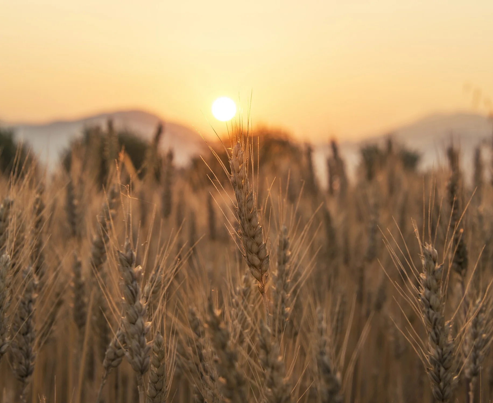
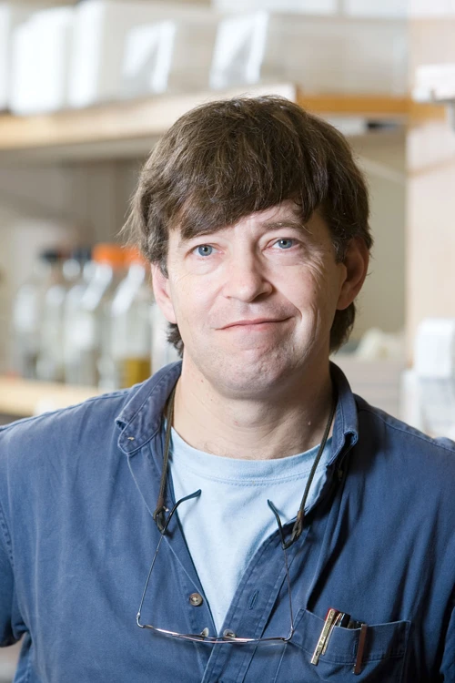

Give your findings
a wider context.
Connect focused genomic discoveries with questions that reach across agriculture and ecosystem science.

PAG34 · SAN DIEGO · JANUARY 10, 2027
Genomics of Crop Ecosystem Services
The next chapter of agriculture starts with a deeper understanding of life. Bring your research. Help shape what grows next.
A BIGGER PICTURE OF WHAT CROPS CAN DO.
Food is only the beginning. The genomes of crops—and the communities around them—hold possibilities for cleaner water, carbon capture, and more resilient agricultural systems.
Climate change and emerging markets for ecosystem services are expanding the goals of crop improvement. This workshop connects genomic discovery with the food, energy, and water challenges shaping agriculture’s future.
Follow the connectionsTHE SCIENCE. CONNECTED.
Three ways into the conversation.
Countless possibilities between them.
Perennial grains. New domesticates. Orphan crops with extraordinary potential. Explore genomics that expands what we grow, how we grow it, and the services crops can provide.
Connect crop genomes with the challenges of a changing climate. Bring research on carbon capture, water quality, and sustainable agricultural intensification into a shared conversation.
From plant microbiomes to indispensable pollinators, discover the genes and genomes connecting crops with mutualists, commensals, and parasites—and with the ecosystems they inhabit.
GOOD IDEAS GROW IN GOOD COMPANY.
Connect focused genomic discoveries with questions that reach across agriculture and ecosystem science.
Bring crop, microbiome, and pollinator research into the same room. Find the connections between your questions.
Colleagues, mentees, and collaborators are welcome. Emerging work and new perspectives belong in the conversation.
SPECIAL THANKS · PAG33 / 2026
To our past presenters: thank you for sharing your discoveries, opening new questions, and bringing this community together.
Plant–microbiome interactions
Unraveling Specialized Metabolism in Plant-Microbiome Interactions Using a Multi-Omics-Based Approach
Profile & photo source ↗Poplar microbiomes
Influence of Bacillus Inoculation on Rhizosphere Microbiome Structure and Functional Potential in Poplar
Profile & photo source ↗Sorghum ideotype breeding
Integrating Phenomics, Genomics, and Predictive Modeling to Accelerate Ideotype Breeding in Grain Sorghum
Profile & photo source ↗Comparative genomics · PGDD2.0
PGDD2.0: A Comparative Genomics Platform for Linking Gene Duplication, Ecological Function, and Ecosystem Services
Profile & photo source ↗Perennial crop genomics
Genomic Diversity and Trait Architecture Supporting Ecosystem Services in a Perennial Crop - A Case Study in Asparagus
Profile & photo source ↗Sustainable intercropping
Intercropping for Sustainable Agricultural Intensification and Improved Agroecosystem Services
Profile & photo source ↗Recognizing the presenters listed in the January 12, 2026 workshop program.
Revisit the PAG33 workshop ↗YOUR NEXT DISCOVERY DESERVES A CONVERSATION.
We’re bringing together the science of what comes next.
There’s a place in that conversation for your ideas.
FROM IDEA TO INBOX. SIMPLY.
No long application to get started. Tell Andrew H. Paterson what you’d like to present.
Early requests have the best chance of receiving an available speaking slot.

WE’LL SEE YOU IN SAN DIEGO.
4:00–6:10 PM PST
Pacific E · San Diego, California, USA
Speakers and talk titles will be announced as the workshop program develops.
PAG scientific program ↗A FEW THINGS TO KNOW.
Researchers working on crops and their wider phytoecosystems are welcome to get in touch. Please circulate this invitation to colleagues, mentees, and collaborators whose work fits the workshop themes.
Talks are approximately 20 minutes. Send a brief description of your proposed subject to Andrew H. Paterson to discuss a possible slot.
Talks must be presented in person in San Diego. The workshop is Sunday, January 10, 2027, from 4:00 to 6:10 PM PST in Pacific E.
The meeting does not defray any costs for workshop speakers. Please plan for conference registration, travel, and accommodation.
As early as possible. The deadline for the organizer to provide speaker names to PAG is November 16, 2026. Early requests are most likely to receive one of the available slots.